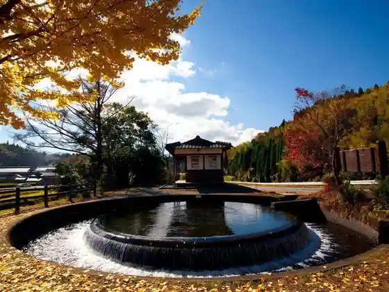
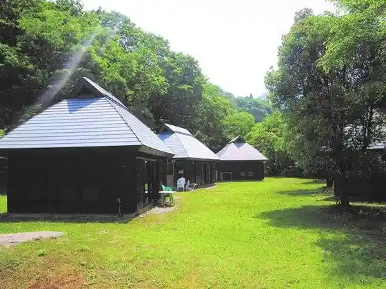
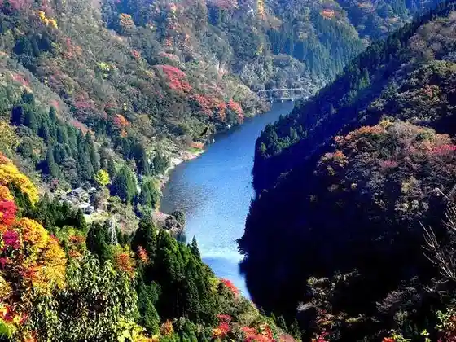
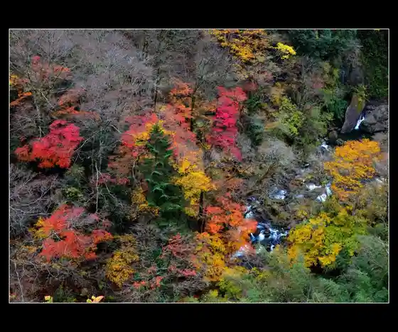

Enkei Bunsui
Yamato, Kumamoto · 0967-72-1158 · Official / source link

Aoba no Se Koryu Sokushin Shisetsu
Yamato, Kumamoto · 0967-82-3511 · Official / source link

Soyo Kyo
Yamato, Kumamoto · 0967-83-1111 · Official / source link

Midori Sen Kyo
Yamato, Kumamoto · 0967-82-3224 · Official / source link

Tori Jun Hashi (Tsujunkyo)
Yamato, Kumamoto · 0967-72-3855 · Official / source link
Roadside Station Kiyokazu Bunraku Mura Kiyokazu Bunraku Kan
Yamato, Kumamoto · 0967-82-3001 · Official / source link
Tori Jun Shuzo
Yamato, Kumamoto · 0967-72-1177 · Official / source link
Kiyokazu Kogen Tenmondai Kiyokazu Highlands no Yado
Yamato, Kumamoto · 0967-82-3300 · Official / source link
Midoriyama Kyo Fisshingu Park Campground
Yamato, Kumamoto · 0967-82-3224 · Official / source link
Uta Se Campground
Yamato, Kumamoto · 0967-83-0554 · Official / source link
I Mu Tako Hara Campground
Yamato, Kumamoto · 0967-82-3210 · Official / source link
Go Rogataki
Yamato, Kumamoto · 0967-72-1158 · Official / source link
Hei Ritsu Shrine (Heitatejingu)
Yamato, Kumamoto · 0967-83-0159 · Official / source link
Otoko Sei Shrine
Yamato, Kumamoto · 0967-72-1158 · Official / source link
Ayu no Se Bridge
Yamato, Kumamoto · 0967-72-1158 · Official / source link
Fuku Kakari Matsu Campground
Yamato, Kumamoto · 0967-83-0249 · Official / source link
Yuki Village Hotaru Kan
Yamato, Kumamoto · 080-9978-0704 · Official / source link
Kansei Kura (Kanseigura)
Yamato, Kumamoto · 0967-72-1177 · Official / source link
Matsuoka Guriin Farm Yamato
Yamato, Kumamoto · 0967-76-0057 · Official / source link
Yamato Kanko Bunka Koryu Kan (Yamato Bunka Forest)
Yamato, Kumamoto · 0967-72-9400 · Official / source link
Shoichi Ryo Shrine
Yamato, Kumamoto · 0967-72-2377 · Official / source link
Goyururi
Yamato, Kumamoto · 080-4286-7544 · Official / source link
Roadside Station Soyo Kaze Park
Yamato, Kumamoto · 0967-83-0880 · Official / source link
Resutoran Mamu (Roadside Station Soyo Kaze Park Nai)
Yamato, Kumamoto · 0967-83-0880 · Official / source link
JUGAAD BROS DOUGHNUTS (Jugadoburozudonattsu)
Yamato, Kumamoto · 0967-72-9151 · Official / source link
Yuzu no Ki Nemu no Ki Mizutama no Ki
Yamato, Kumamoto · 0967-82-2685 · Official / source link
Umami Hara Hashi
Yamato, Kumamoto · 0967-72-1115 · Official / source link
Roadside Station Tori Jun Hashi
Yamato, Kumamoto · 0967-72-9900 · Official / source link
Pan Workshop Yama GEN
Yamato, Kumamoto · 0967-83-1021 · Official / source link
Ryugu Taki
Yamato, Kumamoto · 0967-72-1115 · Official / source link